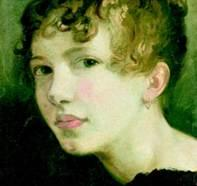

“Trang viên Mansfield” là cuốn tiểu thuyết Jane Austen viết từ năm 1812 đến năm 1814. Đây là tác phẩm nhiều tham vọng nhất của Austen, về độ dài, miêu tả tính cách đa dạng và phạm vi các chủ đề. Tác phẩm xoáy vào việc giáo dục đạo đức cá nhân trong ba gia đình thuộc ba tầng lớp khác nhau trong xã hội lúc bấy giờ.
Fanny Price, nhân vật nữ chính trong truyện, là con gái thứ của một gia đình nghèo đông con. Vì không thể nuôi nổi gia đình, bà Price đã quyết định gửi cô cho người chị ruột của mình nuôi nấng. Fanny được sống trong trang viên Mansfield cùng bốn người con của ông bà Bertram, hai công tử và hai tiểu thư. Gồm Tom, Edmund, Maria và Julia Bertram.
Cô là một thiếu nữ nghèo hiền hậu, nhu mì, thông minh, nhạy cảm, giàu đức hy sinh, chân thành với nguyên tắc của mình, song quá khiêm nhường và bị ngược đãi. Cô phải chống chọi lại những hậu quả này, đồng thời xem xét lại tình cảm riêng của mình, trong lúc chịu đựng sự thờ ơ phi lý, nệ cổ và thái độ coi thường, hợm hĩnh của những người quanh cô.
Edmund Bertram là anh họ của Fanny, cậu dí dỏm và hấp dẫn khi được phép sống tự nhiên, nhưng do nhiều tình huống bắt buộc phải dè dặt, nên anh có vẻ cứng nhắc và hay suy xét. Còn anh em Henry và Mary Crawford mồ côi sớm, được chú thím thuộc tầng lớp thượng lưu ở Luân Đôn nuôi dưỡng. Chú thím yêu quý song không quan tâm giáo dục đạo đức cho họ, nên tuy tràn đầy sức sống và hấp dẫn, cả hai đều ích kỷ, phù phiếm và nông cạn không sao cứu vãn nổi.
Edmund bị hấp dẫn bởi Mary nhưng lại đau khổ vì cô. Henry sau khi bỏ ý định quyến rũ hai cô em gái của Edmund thì nhận ra mình bị cuốn hút bởi sự dịu dàng, thùy mị của Fanny. Trong khi đó, Fanny nhận ra mình yêu anh họ Edmund của mình biết nhường nào nhưng vẫn im lặng chờ đợi. Họ bị vướng vào vòng xoáy tình cảm rắc rối.
Tuy nhiên, Fanny và Edmund là hai con người sinh ra là để cho nhau, sau bao khó khăn và trưởng thành của cả đôi bên, họ đã đi đến hôn nhân.
Cuốn tiểu thuyết nêu bật sức mạnh đạo đức thể hiện chiều sâu của tâm hồn, các nhân vật nữ thùy mị và thực tế, sẵn sàng hy sinh cơ hội được hưởng hạnh phúc trần thế hơn là hành động ngược lại tiêu chuẩn đạo đức cơ bản của họ, không ngừng đề cao tình yêu vị tha và biết quên mình, nhận thức được những giới hạn, sự bí ẩn của trí tuệ và tính cách con người.
Tác phẩm này đã được dựng thành phim.
Về tác giả

Jane Austen (1775-1817) là nhà tiểu thuyết Anh, nổi tiếng vì những đề tài sâu sắc, dí dỏm về xã hội nước Anh đầu thế kỷ 19. Austen được tôn vinh là một trong những nhà tiểu thuyết vĩ đại nhất của thế kỷ 19 và 20.
Các tác phẩm nổi tiếng của bà: Kiêu hãnh và định kiến, Lý trí và tình cảm, Thuyết phục, Emma, Trang viên Mansfield và Tu viện Northanger.
“Tiểu thuyết của Jane Austen thực sự là những câu chuyện đích thực của trái tim. Sự quyến rũ của những cuốn tiếu thuyết ấy là mạch lãng mạn chảy ngầm dưới những câu chuyện tình, là tài phân tích tâm lý cảm xúc của nhân vật nữ một cách phi thường, là khả năng khắc họa những hình ảnh lý tưởng khác nhau của các chàng trai khiến trái tim độc giả nữ mê muội, là chất hài hước thể hiện một con mắt quan sát xã hội rất sắc sảo, là kết thúc có hậu khi tất cả các nhân vật nữ sau nhiều sóng gió đều tìm được tình yêu đích thực… Có lẽ Jane Austen không chỉ quá lãng mạn mà còn quá thông minh.”